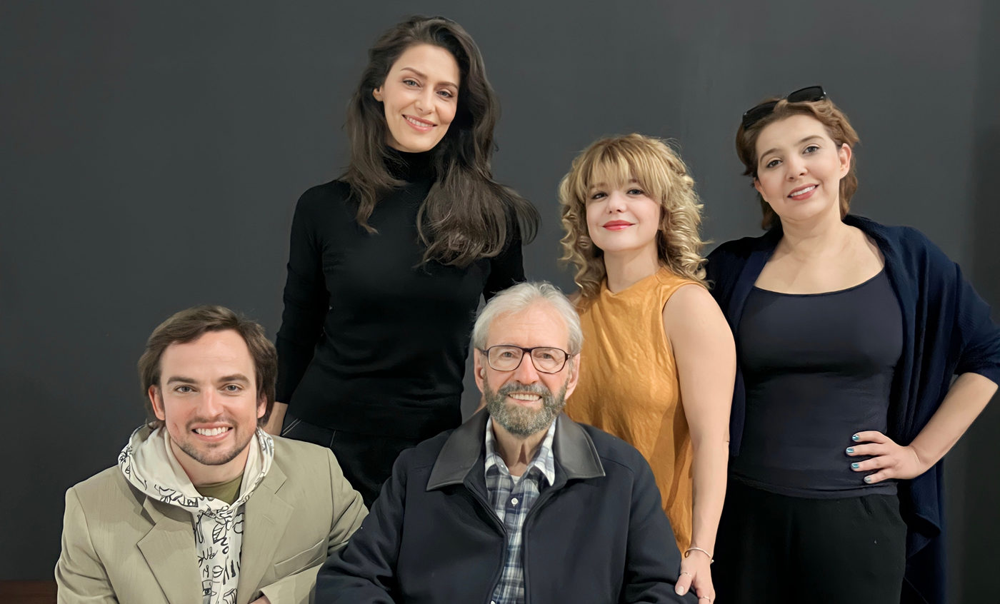

Foto — Foyer
Teatro
Texto Teatral de Giovani Tozi, encenado por Maria Fernanda Cândido, marcará homenagens a Jô Soares
“O Livro Vivo” é uma obra baseada na autobiografia desautorizada de Jô Soares e Matinas Suzuki Junior, ela evoca momentos marcantes da trajetória desse ícone da…